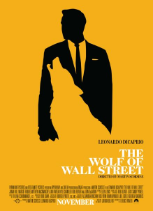
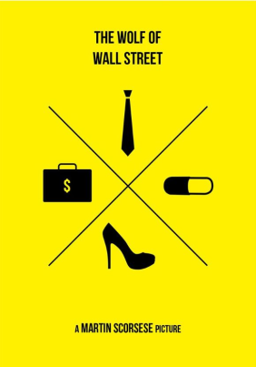
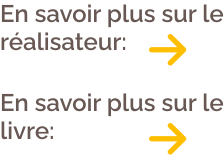

Le film "Le Loup de Wall Street" réalisé par Martin Scorsese est sorti en 2013. C’est l’histoire de Jordan Belfort, trader américain à Wall Street dans les années 1980. L’argent, le pouvoir et les femmes résument sa vie. Lui et sa meute n’ont qu’un seul objectif : gagner un maximum d’argent.

L’histoire se déroule dans les années 1980. Jordan est un courtier fraîchement diplômé qui ne souhaite qu’une seule chose : devenir riche. Il travaille pour l’entreprise L.F Rothschild à Wall Street qui fait faillite. Sa femme Teresa l’informe que l’on recherche un courtier dans une entreprise qui vend de petites actions à Long Island. Jordan a acquis une grande expérience à Wall Street. Il va utiliser cette entreprise pour s’enrichir.
"Jordan a acquis une grande
expérience à Wall Street."
Puis, il rencontre Donnie Azoff, un homme qui vit dans le même immeuble que lui et qui vend des meubles pour enfants. Donnie est intrigué par le style de vie de Jordan. Celui-ci lui explique la provenance de ses revenus. Ils deviennent associés et montent leur entreprise de courtage qui se nomme Stratton Oakmont. Jordan et Donnie s’enrichissent en travaillant de façon illégale. Arnaquer les clients est devenu leur mode opératoire. Ils diffusent de fausses nouvelles pour répandre des informations financières erronées dans le but de manipuler les cours des bourses.
"Arnaquer est devenu leur mode opératoire"
L’entreprise prospère et recrute. Jordan et sa meute gagnent énormément d’argent

"Ils deviennent associés et montent leur entreprise de courtage qui se nomme Stratton Oakmont."
Jordan mène une vie de riche délinquant où dominent l’argent, les femmes, le pouvoir et la drogue. Il trompe sa femme avec Naomi Lapaglia. Jordan demande le divorce pour se marier avec Naomi avec qui il a un enfant, Skylar. Jordan et Donnie introduisent un fabricant de chaussures Steeve Madden en bourse. Ils gagnent 22 millions de dollars en très peu de temps. Mais Jordan apprend que le FBI le surveille de très près. Il décide de cacher 20 millions en Suisse avec l’aide d’Emma, la tante de Naomi.
"Ils gagnent 22 millions de dollars en très peu de temps."
Pendant un voyage en Italie avec Donnie, sa femme et Naomi, il apprend que tante Emma est décédée. Il veut récupérer son argent. Mais le bateau qui devait les emmener en Suisse coule lors d’une tempête ce qui l’empêche d’arriver à temps à la banque.
"Jordan mène une vie de riche délinquant où dominent l’argent, les femmes, le pouvoir et la drogue."
Quelques années plus tard, Jordan est arrêté par Patrick Denham, membre du FBI. Pour échapper à 20 ans de prison, Jordan doit trahir ses collègues et ses amis. Il réfléchit à cette proposition. Naomi décide de divorcer et d’obtenir la garde des enfants. Jordan réagit très mal. Il gifle Naomi et tente de kidnapper ses propres enfants. Mais, sa femme réussit à les récupérer et part avec eux, laissant Jordan seul.
"Jordan doit trahir ses collègues et ses amis."
Il décide d’accepter le contrat du FBI. On lui demande de porter un micro lors d’une réunion. Il en informe Donnie en lui donnant un papier écrit. Le FBI réussit à récupérer le papier. Jordan part alors en prison. L’entreprise Stratton Oakmont ferme. Jordan est condamné à 36 mois de prison mais il n’en fera que 22. A sa sortie, il donne des conférences où il enseigne les techniques de vente.

"Jordan est condamné à 36 mois de prison mais il n’en fera que 22. "
Le Loup de Wall Street est un film fascinant qui met en avant la perversité du héros. La réplique « Et surtout, n’oubliez pas que trop n’est jamais assez ! » met en avant une personnalité particulière. Dès le début, Jordan Belfort impose son mode de vie contrôlé par l’argent et le pouvoir. Il a conscience de sa puissance et il en abusera. Le spectateur envie Jordan pour son audace, et son influence. Il accepte la manipulation d’autrui au point d’en aimer ça. Mais c’est une personne égoïste et amorale qui ne ressent aucune empathie pour les autres. Il trompe les gens et jouit du pouvoir que lui donne son argent pour transgresser la loi. En principe, ce comportement devrait dégoûter le spectateur mais il procure un émerveillement chez lui. Sa mégalomanie impressionne et déstabilise.

"Le spectateur envie Jordan pour son audace, et son influence."
